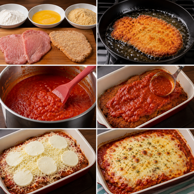
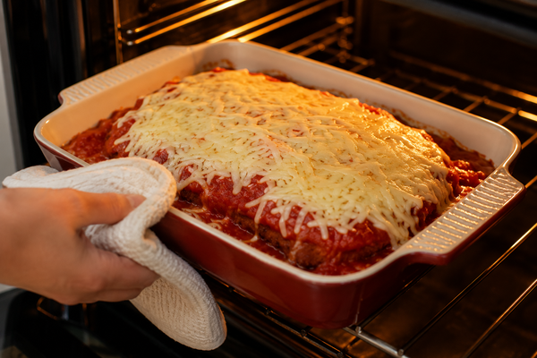

Filé à parmegiana
A receita de filé à parmegiana é um prato clássico e saboroso. O filé à parmegiana é
servido quente, acompanhado de arroz branco, batatas fritas ou salada, conforme a preferência



Menu
Ingredientes (6 porções)
Utensílios
Modo de Preparo
Tempo de preparo: 40 min
- Temprere os filés com o alho, orégano, sal, pimenta e vinagre.
- Passe pela farinha de rosca, nos ovos batidos e novamente pela farinha de rosca.
- Frite em óleo quente.
- Escorra sobre o papel toalha
- Acomode os filés em um refratário regado com um pouco de molho de tomate.
- Coloque fatias de mussarela sobre os filés.
- Regue com o molho de tomate.
- Polvilhe o queijo parmesão ralado.
- Leve ao forno pré-aquecido para derreter a mussarela
- Sirva com arroz ou purê e uma salada